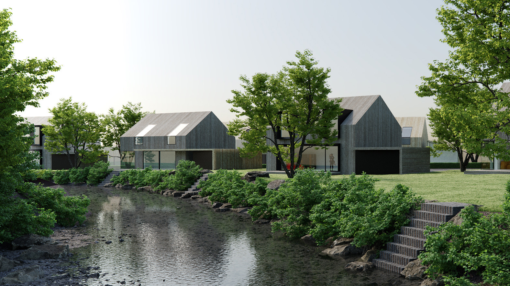
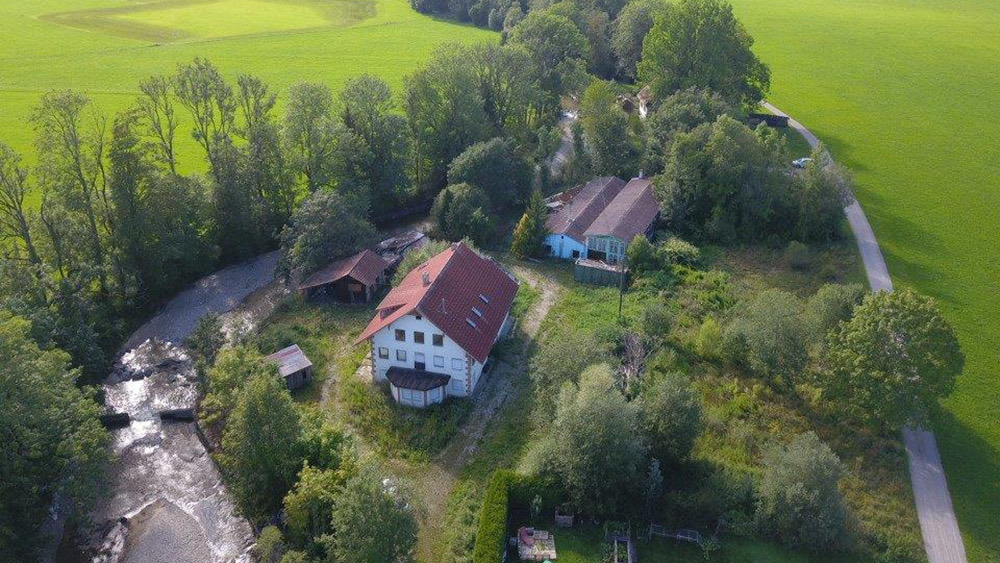
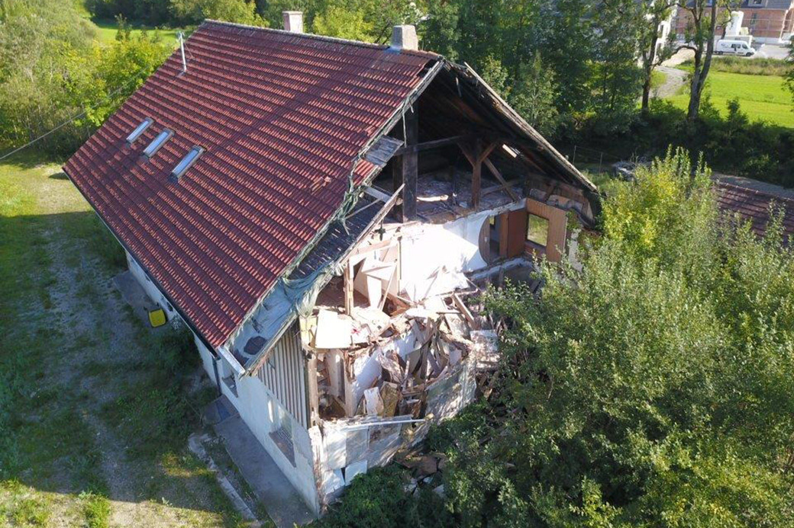
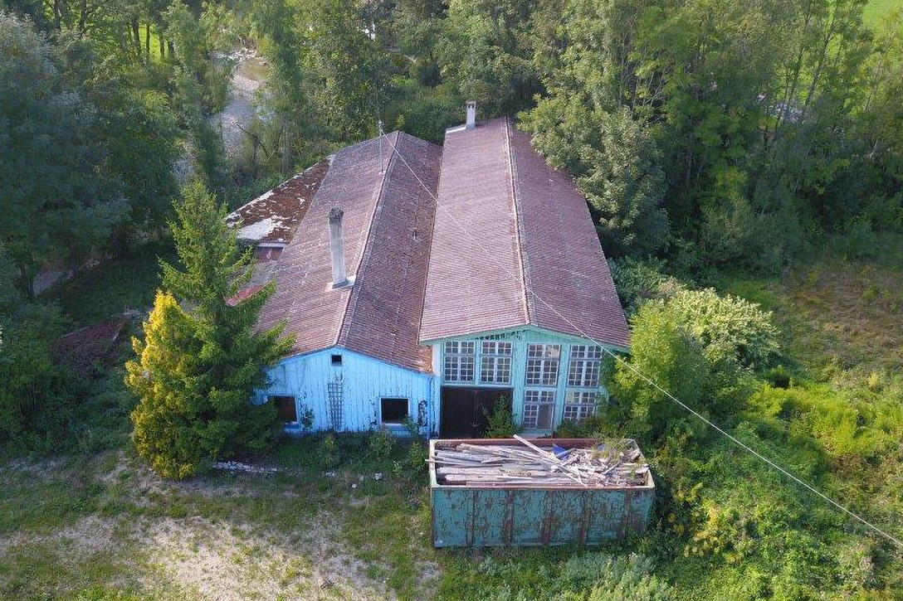
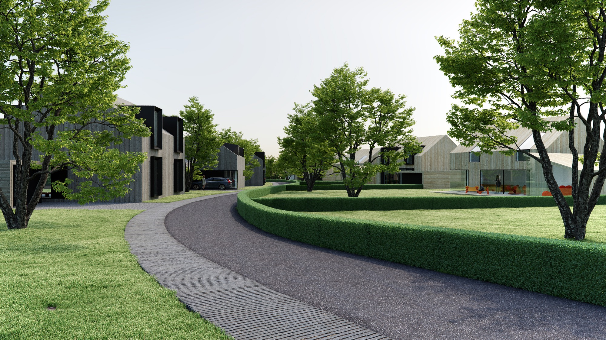
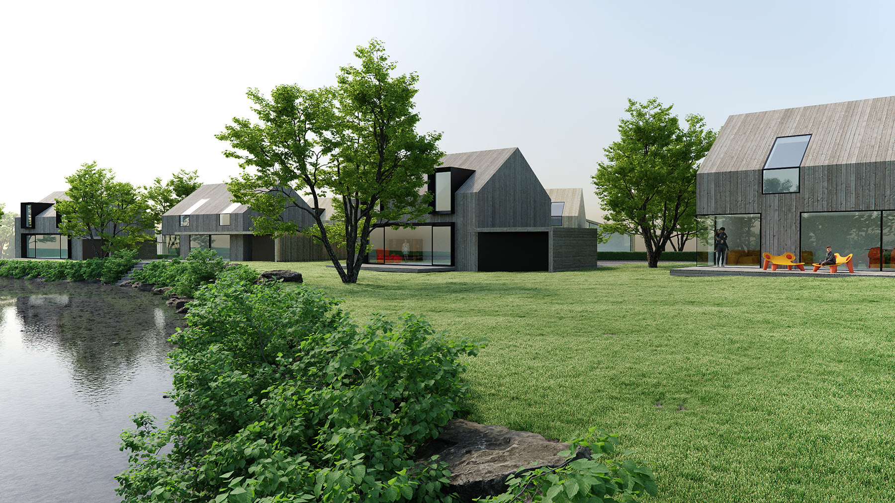
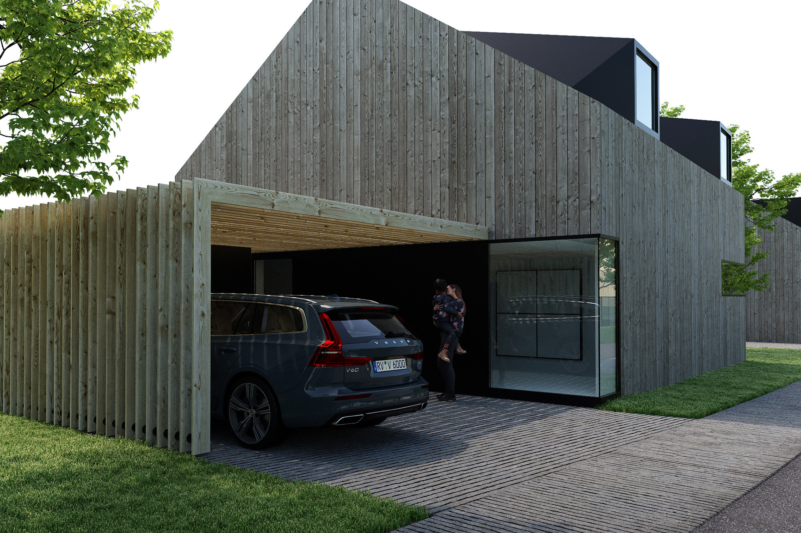
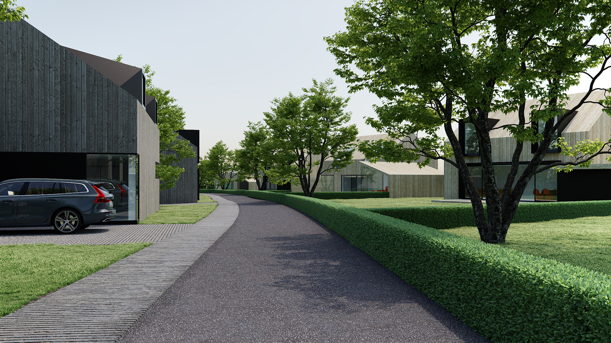
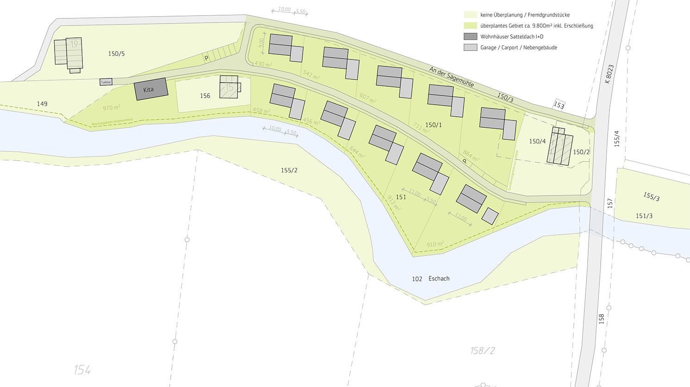

Friesenhofen – An der Sägemühle
Machbarkeitsstudie Wohnareal Sägemühle
- Kategorie
- Umnutzen · Wettbewerbe · Wohnen
- Standort
- An der Sägemühle, 88299 Leutkirch im Allgäu
- Bauherr
- Privat
Galerie







01 — Projekt
Die ehemalige Sägmühle ist ein einzigartiges Areal auf einer Fläche von insgesamt ca. 1,8 Hektar am Ortsrand von Friesenhofen. Idyllisch gelegen entlang der Eschach befindet es sich direkt im Anschluss an ein Neubaugebiet und ist mit 2 großen Hauptgebäuden bebaut. Ca. 40% der Flächen der Sägmühle dienen als kartierte Biotope dem Schutz der Natur.
Die historische Nutzung bestand aus einem Sägewerk, einem Kies- und Schotterwerk sowie aus einem Elektrizitätswerk. Mit landesweiten Stromnetzen und großen, überregional agierenden Betrieben wurden Holzbearbeitung und Kiesgewinnung unrentabel und es entstand eine unansehnliche Gewerbebrache. Ein Brand- und Wasserschaden hat auch das große Wohnhaus unbewohnbar gemacht.
In Zusammenarbeiten mit den Eigentürmern und einem Immobilienbüro wurde eine innovative Lösung im Interesse des Ortes entwickelt, die der außergewöhnlichen Lage gerecht wird.
02 — Architektur und Gestaltung
Vorgesehen sind Gebäudetypen in variierenden Anordnungen. Diese sollen harmonisch und mit Ortsbezug in die vorhandene Topographie eingebunden werden. Ziel ist eine einheitliche, homogen gestaltete und identitätsstiftende Bebauung in klarer Formensprache bei variabler in Gestaltung. Die Eigentumsbildung soll auch für junge Familien möglich sein.
Den Belangen des Klimaschutzes und der Nachhaltigkeit soll unbedingt Rechnung getragen werden. Dies kann über die Ausführung der Gebäude in z. B. Holzbauweise und über Solarthermie Nutzung oder Photovoltaik erfolgen. Ein Nahwärmenetz über ein biomassebetriebenes Blockheizkraftwerk mit Nutzung der Wärme und des selbst erzeugten Stroms wird dabei ebenso wie die Nutzung von Luftwärmepumpen auf ihre Machbarkeit hin überprüft werden.
Der architektonischen Gestaltung liegen folgende Kernsätze zu Grunde:
- Die Wohnstrukturen sind flexibel und können sich ändernden Anforderungen entsprechen
- Alt und Jung leben gemeinsam in einer Siedlung, es entsteht ein lebenswerter Ort
- Es gibt bezahlbaren Raum für junge Familien und altersgerechte Wohnformen
- Die Siedlung kann in Abstimmung mit der Gemeinde weitere notwendige Nutzungen wie z. B. einen Naturkindergarten beinhalten
Geplant sind 10 kleine Einfamilienhäuser, die sich parallel der Eschach in zwei Reihen gliedern und dabei sparsam mit den Ressourcen Grund und Boden umgehen. Gleichzeitig ist es ein innovatives Mehrgenerationen-Konzept vorgesehen. Die Häuser sind aufgrund verhältnismäßig geringer Wohnfläche für Familien erschwinglich und gleichzeitig für ältere Menschen gut geeignet. So können Jung und Alt zusammenwohnen und zusammenleben.
Stimme
„Platzhalter — ein bis zwei Sätze des Bauherrn oder der Projektleitung.“
Pläne

Projektdaten
Projekt
- Nutzung
- Nutzung ergänzen
- Erbrachte Leistungen
- Objektplanung, Generalplanung — ergänzen
- Zertifikate
- Zertifizierung ergänzen
- Fotografie
- Fotograf:in ergänzen
- Veröffentlichungen
- Publikation, Medium, Jahr — ergänzenPublikation, Medium, Jahr — ergänzen
Team
- Name ergänzen
- Name ergänzen
- Name ergänzen
Kontakt
Fragen zum Projekt
Wir sprechen gern über die Herausforderungen und die Konzepte unserer Projekte. Kommen Sie gern auf uns zu, wir freuen uns auf den Austausch.